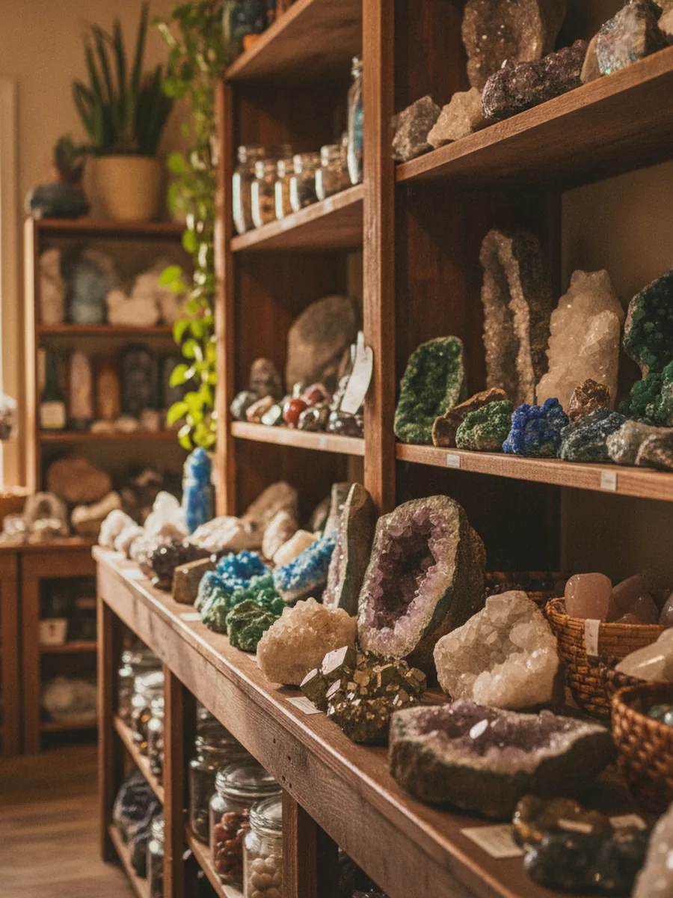

Our story
Three generations on Main Street.
Moab Rock Shop opened in 1960, and the same family has stood behind the counter ever since: three generations who grew up sorting stones in the back room.
Sixty-six years later, we're still doing the one thing we know: putting Utah's rocks, fossils and minerals into the hands of people passing through. The inventory turns over constantly. The welcome hasn't.
- Family-owned since 1960
- Three generations, same counter
- New specimens most weeks